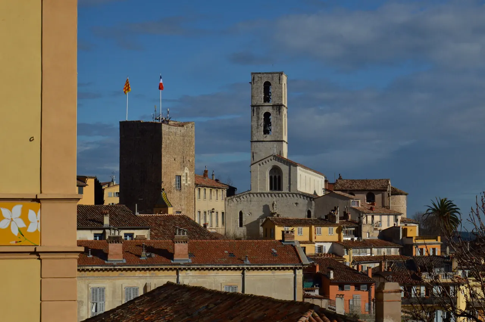

Grasse

| 지역 | Aix |
|---|---|
| 등급 | Optional |
| 언제 | Day 12 · 9/9시간표 기준 |
| 상세 | 챕터 본문에서 보기 |
참고
오프라인입니다. 위키백과와 지도 링크는 연결되면 다시 동작합니다.
무엇인가 — 향수가 산업이 된 도시
원래는 가죽 무두질 도시였고, 장갑의 냄새를 감추려고 향을 입힌 것이 향수 산업의 시작이라고 알려져 있다 이 유래는 이번 조사에서 검증하지 못했다. 배후 구릉의 재스민·장미·라벤더가 원료가 됐다.
프라고나르 향수 박물관은 그라스의 옛 공장 건물에 있다. 1926년 창업자 외젠 푹스가 리비에라로 모여들기 시작한 관광객에게 향수를 파는 아이디어를 낸 것이 시작이다.
⚠ 이 항목은 조사가 부족하다 국제향수박물관(MIP)·몰리나르·갈리마르 등 다른 시설과의 비교, 향수 제작 워크숍의 소요·예약 조건은 보완 필요 상태다.
현실적 판단 Day 12의 성격상 향수 가게 한 곳에서 30–40분이 적정하다. 워크숍은 90분 이상 걸린다. "Grasse 실내로 축소"를 우선 삭제 항목으로 잡은 것이 옳다.